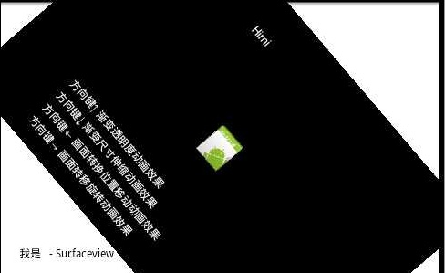

在SurfaceView中照样使用Animation(中)
MySurfaceViewAnimation.java
import android.content.Context;import android.graphics.Bitmap;
import android.graphics.BitmapFactory;
import android.graphics.Canvas;
import android.graphics.Color;
import android.graphics.Paint;
import android.util.Log;
import android.view.KeyEvent;
import android.view.SurfaceHolder;
import android.view.SurfaceView;
import android.view.SurfaceHolder.Callback;
import android.view.animation.AlphaAnimation;
import android.view.animation.Animation;
import android.view.animation.RotateAnimation;
import android.view.animation.ScaleAnimation;
import android.view.animation.TranslateAnimation;
public class MySurfaceViewAnimation extends SurfaceView implements Callback,
Runnable {
private Thread th = new Thread(this);
private SurfaceHolder sfh;
private Canvas canvas;
private Paint paint;
private Bitmap bmp;
private Animation mAlphaAnimation;
private Animation mScaleAnimation;
private Animation mTranslateAnimation;
private Animation mRotateAnimation;
public MySurfaceViewAnimation(Context context) {
super(context);
Log.v("Android", "MySurfaceView");
this.setKeepScreenOn(true);
bmp = BitmapFactory.decodeResource(getResources(), R.drawable.icon);
sfh = this.getHolder();
sfh.addCallback(this);
paint = new Paint();
paint.setAntiAlias(true);
setFocusable(true);
setFocusableInTouchMode(true);
// this.setBackgroundResource(R.drawable.icon);//备注2
}
public void surfaceCreated(SurfaceHolder holder) {
Log.v("Android", "surfaceCreated");
th.start();
}
public void draw() {
try {
canvas = sfh.lockCanvas();
if (canvas != null) {
canvas.drawColor(Color.BLACK);
paint.setColor(Color.WHITE);
canvas.drawText("方向键↑ 渐变透明度动画效果", 80, this.getHeight() - 80,
paint);
canvas.drawText("方向键↓ 渐变尺寸伸缩动画效果", 80, this.getHeight() - 60,
paint);
canvas.drawText("方向键← 画面转换位置移动动画效果", 80, this.getHeight() - 40,
paint);
canvas.drawText("方向键→ 画面转移旋转动画效果", 80, this.getHeight() - 20,
paint);
canvas.drawBitmap(bmp,
this.getWidth() / 2 - bmp.getWidth() / 2,
this.getHeight() / 2 - bmp.getHeight() / 2, paint);
}
} catch (Exception e) {
Log.v("Android", "draw is Error!");
} finally {
sfh.unlockCanvasAndPost(canvas);
}
}
@Override
public boolean onKeyDown(int keyCode, KeyEvent event) {
if (keyCode == KeyEvent.KEYCODE_DPAD_UP) {// 渐变透明度动画效果
mAlphaAnimation = new AlphaAnimation(0.1f, 1.0f);
mAlphaAnimation.setDuration(3000);
this.startAnimation(mAlphaAnimation);
} else if (keyCode == KeyEvent.KEYCODE_DPAD_DOWN) {// 渐变尺寸伸缩动画效果
mScaleAnimation = new ScaleAnimation(0.0f, 2.0f, 1.5f, 1.5f,
Animation.RELATIVE_TO_PARENT, 0.5f,
Animation.RELATIVE_TO_PARENT, 0.0f);
mScaleAnimation.setDuration(2000);
this.startAnimation(mScaleAnimation);
} else if (keyCode == KeyEvent.KEYCODE_DPAD_LEFT) {// 画面转换位置移动动画效果
mTranslateAnimation = new TranslateAnimation(0, 100, 0, 100);
mTranslateAnimation.setDuration(2000);
this.startAnimation(mTranslateAnimation);
} else if (keyCode == KeyEvent.KEYCODE_DPAD_RIGHT) {// 画面转移旋转动画效果
mRotateAnimation = new RotateAnimation(0.0f, 360.0f,
Animation.RELATIVE_TO_SELF, 0.5f,
Animation.RELATIVE_TO_SELF, 0.5f);
mRotateAnimation.setDuration(3000);
this.startAnimation(mRotateAnimation);
}
return super.onKeyDown(keyCode, event);
}
public void run() {
while (true) {
draw();
try {
Thread.sleep(100);
} catch (Exception ex) {
}
}
}
public void surfaceChanged(SurfaceHolder holder, int format, int width,
int height) {
Log.v("Android", "surfaceChanged");
}
public void surfaceDestroyed(SurfaceHolder holder) {
Log.v("Android", "surfaceDestroyed");
}
}
动画代码实现跟View中的做法一样，运行模拟器发现按键没效果，不是按键没触发是本来就存在问题， - -。但是！大家可以把此类里有一行，也就是(备注2)的注释打开,我们给设置背景图,然后在模拟器上的运行效果如下图：
很明显的看到，我们的动画正常运行了，虽然效果并不是我们想到的！但是这里可以说明一点问题：
SurfaceView 本身具备双缓冲机制!!!!!
有些文章里说“给SurfaceView添加双缓冲”，其实是在画蛇添足,而且介绍的时候拿着单线程与双线程例子来解释双缓冲更高效的实现方法；我想弱弱的问什么是双缓冲？？？如果SurfaceView不具备双缓冲，那敢问上面这张截图如何解释？？？？
其实要实现双缓冲，只需要是新建一个Bitmap和Canvas，用这个新建的Canvas把正弦波画到新建的Bitmap，画完再通过sfh.lockCanvas获取SurfaceView对应的Canvas，用这个Canvas把新建的Bitmap画到SurfaceView上去，这才叫双缓冲; 还有双缓存和多线程没关系!
那么View中动画的实现机制是在不断的刷屏不断的重复调用重写的onDraw()方法、而在Surfaceview的那张截图确实也正常的动画操作了，原因又何在?而且我们设置的背景图覆盖我们draw出来的字体！！效果很不理想；那么经过考虑我决定利用布局把View和SurfaceView都一并显示,用View主要去完成动画部分，(那么关于如何一并显示，或者说同时在SurfaceView中添加组件，在之前的【Android 2D开发之六】 和 【Android 2D开发之七】都有了详细讲解，那么在这里)，当然一并显示也会有问题，比如我们存在了view和Surfaceiew，那么按键的时候触发的哪个？或者说如何去控制这两个View？放心，我下面就跟大家一一来讲解！
下面先让我们把我们的view 和 Surfaceview 先同时显示出来：【黑色的是MyView (View)，白色是MySurfaceView(SurfaceView)】
先上张运行截图：

main.xml中的代码
<?xml version="1.0" encoding="utf-8"?><LinearLayout xmlns:android="http://schemas.android.com/apk/res/android"
android:layout_width="fill_parent"
android:layout_height="fill_parent"
android:orientation="vertical" >
<RelativeLayout
android:layout_width="fill_parent"
android:layout_height="wrap_content"
android:layout_weight="1" >
<com.Android.MySurfaceView
android:id="@+id/view3d"
android:layout_width="fill_parent"
android:layout_height="fill_parent" />
<com.Android.MyView
android:id="@+id/myview"
android:layout_width="fill_parent"
android:layout_height="fill_parent" />
</RelativeLayout>
</LinearLayout>
xml中我们注册了我们自定义的view-MyView和SurfaceView-MySurfaceView;
需要强调的有两点：
1:当我们xml中注册我们的View时，我们View类中的构造函数必须要用
public MyView(Context context, AttributeSet attrs) {} 两个参数的形式，以前的文章有讲解。
2:当我们在Xml中注册两个View的时候，它们显示的次序就是根据xml注册的顺序来显示，比如上面我们先注册了MySurfaceView,然后注册的MyView，那么显示的时候会把后添加进去的MyView显示在最上层!